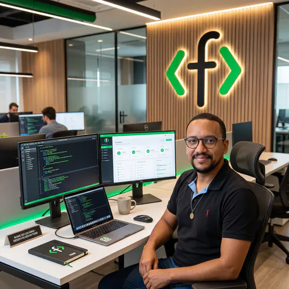

Desenvolvimento de sites & Tráfego Pago
Eu construo a tua presença
digital e te ajudo a vender.
desenvolvimento de sites e tráfego pago com o mesmo profissional, para quem precisa de resultado no negócio ou empreendimento.
// um profissional, duas demandas atendidas
Site sob medida + performance que converte.
A maioria dos freelancers vai te entregar um site. Eu entrego a construção técnica de um sistema sob medida e a performance que faz esse site converter, com tráfego pago e otimização de captação de leads.
Atuando com tecnologia desde 2006. Especialista em tráfego pago desde 2022. Isso significa menos intermediários, menos gente para alinhar e um profissional que entende tanto de código quanto de conversão.

- 2006 atuando com tecnologia
- 2022 especialista em tráfego pago
Projetos em desenvolvimento
// alguns projetos que atendo atualmente.
-
Acaí Town
Site institucional multilíngue para uma referência nacional em exportação de açaí.
-
Vet Up
Site institucional e landing pages para a maior referência em consultoria veterinária para hospitais e clínicas do país.
-
RPD Advocacia
Landing pages e gestão de tráfego pago para escritório de advocacia com atuação nacional.
-
Museu do Folclore
Manutenção e desenvolvimento de sites para o Centro de Estudos da Cultura Popular (CECP).
-
Instituto Ziraldo
Manutenção do site e do acervo digital do instituto que preserva a obra do cartunista Ziraldo.
-
RSC
Manutenção e desenvolvimento do site e acervo digital da Rede Sementes do Cerrado, referência nacional na cadeia de restauração ecológica com sementes nativas.
-
Iandé
Projeto open source de um plugin WordPress para agendamento de visitas, presenciais e online, a museus e instituições culturais.
-
Midiateca Capixaba
Manutenção e sustentação do acervo digital da Midiateca Capixaba, um serviço público que reúne objetos digitais de informação cultural para o cidadão.
-
GP Asfalto
Gestão de tráfego pago para empresa de asfalto, referência na região.
-
Immense
Gestão de tráfego pago para uma das maiores empresas de móveis corporativos.
Como posso ajudar
-
Desenvolvimento de sites
Sites em WordPress ou estáticos, sistemas sob medida e temas/plugins personalizados para o seu negócio ou instituição.
-
Tráfego pago
Mídia paga nas principais plataformas do mercado, como Google Ads, Meta Ads e ChatGPT Ads, com foco em conversão e não só em cliques.
-
Análise de dados
Implementação de rastreamento, com relatórios e dashboards para acompanhar as campanhas.
-
Funil completo
Estruturação do processo de captação de novos clientes para o seu negócio ou instituição.
Vamos conversar sobre o seu projeto
Me conta o que você precisa e eu volto com um diagnóstico rápido — sem enrolação.